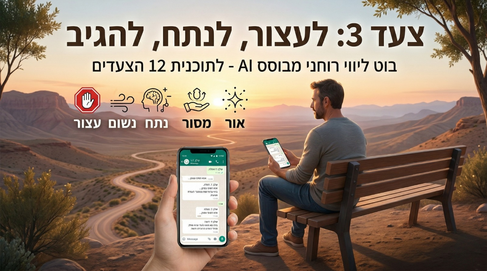

The bot gently guides us through a structured 5-step process: 1️⃣ Containment: Stopping, taking deep breaths, and reading the Step Prayer or the Serenity Prayer. 2️⃣ First Inventory: Identifying the difficulty and what is truly out of our control. 3️⃣ Second Inventory: Finding how we can be of service. 4️⃣ Sobriety: Letting go of the ego and understanding that not everything revolves around us. 5️⃣ Points of Light: Turning resentment into appreciation and compassion for those involved.
Simply click the bot link below and send it the following message: "Hi, I want to start working on the third step."